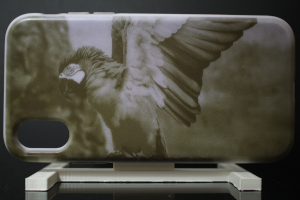
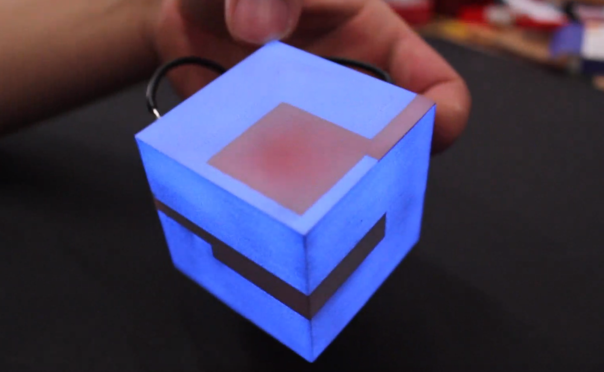
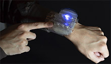
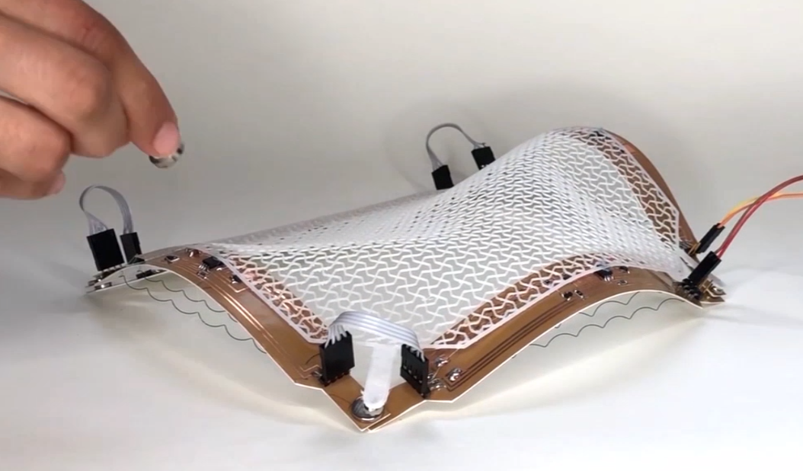
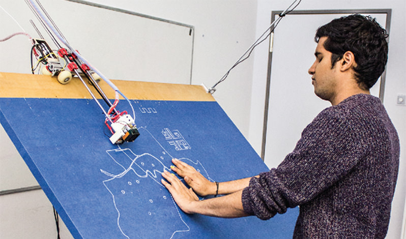
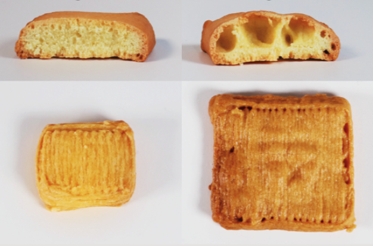
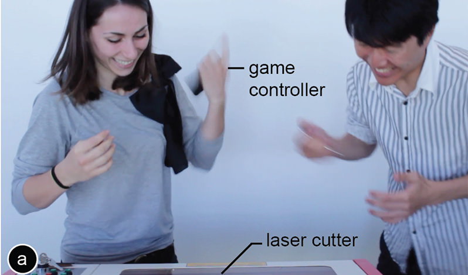

Reprogrammable Color Textures
We envision a future in which physical objects can be “updated” as easily as digital content can be changed today. Consider the ease at which a digital photo can change its appearance by applying a digital filter or adding/removing visual elements. Now imagine the same principle applied to physical objects, i.e. that our clothing can change its color on a daily basis and that product shops are able to showcase different visual designs to customers without the need to have all versions on stock. To enable this vision, our lab developed a method to reprogram the appearance of objects using photochromic dyes. Photochromic dyes are programmable materials that can switch their appearance from transparent to colored when exposed to UV light and switch back to transparent when exposed to visible light, such as from a regular office projector. Since the dyes are bi-stable, they remain in their colored state even when removed from the light source.|
 ChromoUpdate (ACM CHI 2021) |
 Photo-Chromeleon (ACM UIST 2019) Best Paper Award |
 ColorMod (ACM CHI 2018) |
Fabricating Seamlessly Integrated User Interfaces
One of the largest open challenges is how to seamlessly integrate computing into the physical environment that surrounds us until the two are indistinguishable from one another. If solved, our physical environments, such as furniture, rooms and entire buildings, are able to sense our interaction with them and react by adjusting their appearance using seamlessly integrated displays. However, to date it is unclear how to best fabricate such seamlessly integrated sensors and displays.
 Sprayable User Interfaces (ACM CHI 2020) |
 ProtoSpray (ACM CHI 2020) |
Integrated Prototyping of Form, Function, and Materials
One of the largest open challenges is how to seamlessly integrate computing into the physical environment that surrounds us until the two are indistinguishable from one another. If solved, our physical environments, such as furniture, rooms and entire buildings, are able to sense our interaction with them and react by adjusting their appearance using seamlessly integrated displays. However, to date it is unclear how to best fabricate such seamlessly integrated sensors and displays.
 MorphSensor (ACM UIST 2020) |
 CurveBoards (ACM CHI 2020) |
 FoldTronics (ACM CHI 2019) |
 NurbsForms (ACM TEI 2020) |
 Fabricaide (ACM CHI 2021) |
Self-Deploying Devices
One of the largest open challenges is how to seamlessly integrate computing into the physical environment that surrounds us until the two are indistinguishable from one another. If solved, our physical environments, such as furniture, rooms and entire buildings, are able to sense our interaction with them and react by adjusting their appearance using seamlessly integrated displays. However, to date it is unclear how to best fabricate such seamlessly integrated sensors and displays.
 LaserFactory (ACM CHI 2021) |
Unobstrusive Physical Tags Integrated with Objects
One of the largest open challenges is how to seamlessly integrate computing into the physical environment that surrounds us until the two are indistinguishable from one another. If solved, our physical environments, such as furniture, rooms and entire buildings, are able to sense our interaction with them and react by adjusting their appearance using seamlessly integrated displays. However, to date it is unclear how to best fabricate such seamlessly integrated sensors and displays.
 G-ID (ACM CHI 2020) |
Physically Adaptive Training Tools
One of the largest open challenges is how to seamlessly integrate computing into the physical environment that surrounds us until the two are indistinguishable from one another. If solved, our physical environments, such as furniture, rooms and entire buildings, are able to sense our interaction with them and react by adjusting their appearance using seamlessly integrated displays. However, to date it is unclear how to best fabricate such seamlessly integrated sensors and displays.
 Physically Adaptive Tools for Training (ACM TEI 2021) |
Adapt2Learn (ACM DIS 2021) |
Interactive Fabrication
One of the largest open challenges is how to seamlessly integrate computing into the physical environment that surrounds us until the two are indistinguishable from one another. If solved, our physical environments, such as furniture, rooms and entire buildings, are able to sense our interaction with them and react by adjusting their appearance using seamlessly integrated displays. However, to date it is unclear how to best fabricate such seamlessly integrated sensors and displays.
 constructable (ACM UIST 2012) |
 LaserOrigami (ACM CHI 2013) Best Paper Award |
 FormFab (ACM TEI 2019) |
 Protopiper (ACM UIST 2015) |
Roma (ACM CHI 2018) |
Fabrication for Specific Domains
One of the largest open challenges is how to seamlessly integrate computing into the physical environment that surrounds us until the two are indistinguishable from one another. If solved, our physical environments, such as furniture, rooms and entire buildings, are able to sense our interaction with them and react by adjusting their appearance using seamlessly integrated displays. However, to date it is unclear how to best fabricate such seamlessly integrated sensors and displays.|
 Linespace (ACM CHI 2016) |
 FoodFab (ACM CHI 2020) |
 MoSculpt (ACM UIST 2018) |
 Scotty (ACM TEI 2015) |
 Destructive Games (ACM CHI 2016) |
Fast Prototyping
One of the largest open challenges is how to seamlessly integrate computing into the physical environment that surrounds us until the two are indistinguishable from one another. If solved, our physical environments, such as furniture, rooms and entire buildings, are able to sense our interaction with them and react by adjusting their appearance using seamlessly integrated displays. However, to date it is unclear how to best fabricate such seamlessly integrated sensors and displays.
 WirePrint (ACM UIST 2014) |
 faBrickation (ACM CHI 2014) Best Paper Honorable Mention |
 Platener (ACM CHI 2015) Best Paper Honorable Mention |
 LaserStacker (ACM UIST 2015) |